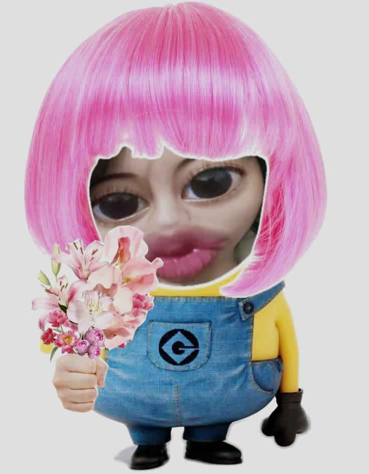

A Song For You
Please click the button below to play the background music before continuing.
Erik
To a wonderful friend,
Alma
Hi Erik,
I hope this letter finds you well and brings a smile to your face today. First of all, I want to say a huge congratulations to you for completing your exams! I am writing this because I truly want you to know how incredibly proud I am of you.
Seeing your dedication, your focus, and the amazing effort you've put into this journey has been wonderful. You have shown so much growth and determination, and you should be very proud of yourself too.
🌸
A flower for you
